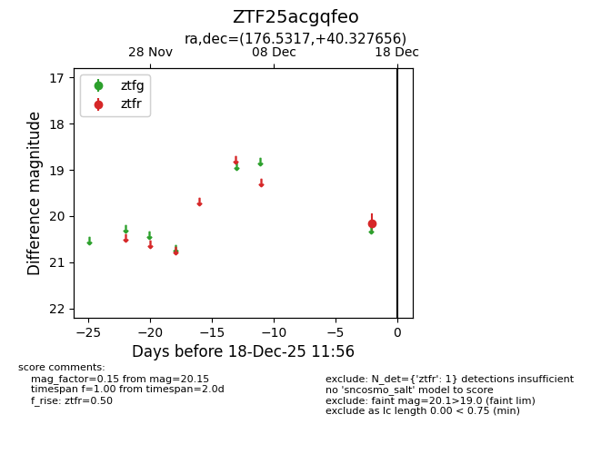
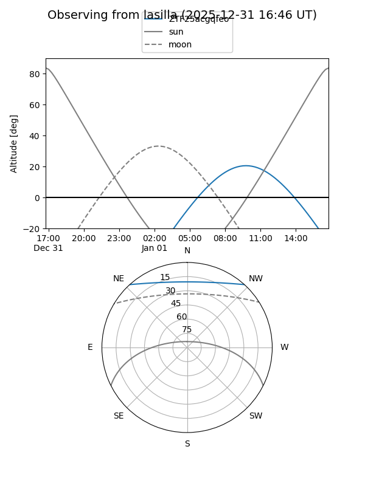
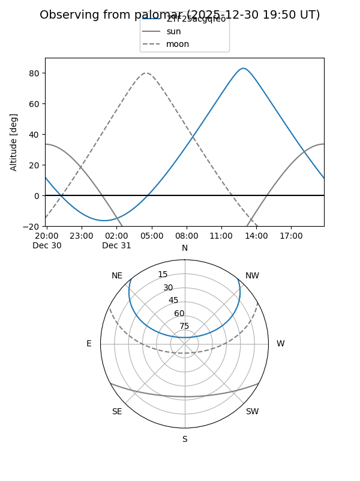

ZTF25acgqfeo
Target ZTF25acgqfeo at 2025-12-18 11:18
Aliases and brokers:
FINK: fink-portal.org/ZTF25acgqfeo
Lasair: lasair-ztf.lsst.ac.uk/objects/ZTF25acgqfeo
ALeRCE: alerce.online/object/ZTF25acgqfeo
alt names
ZTF25acgqfeo (ztf,fink_ztf)
Coordinates:
equatorial (ra, dec) = 176.5317,+40.32766
equatorial (HMS+DMS) = 11:46:07.60,+40:19:39.56
galactic (l, b) = (164.4187,+71.12333)
Photometry
last ztfr=20.15
1 ztfr detections
Lightcurve

Visibility


Additional plots